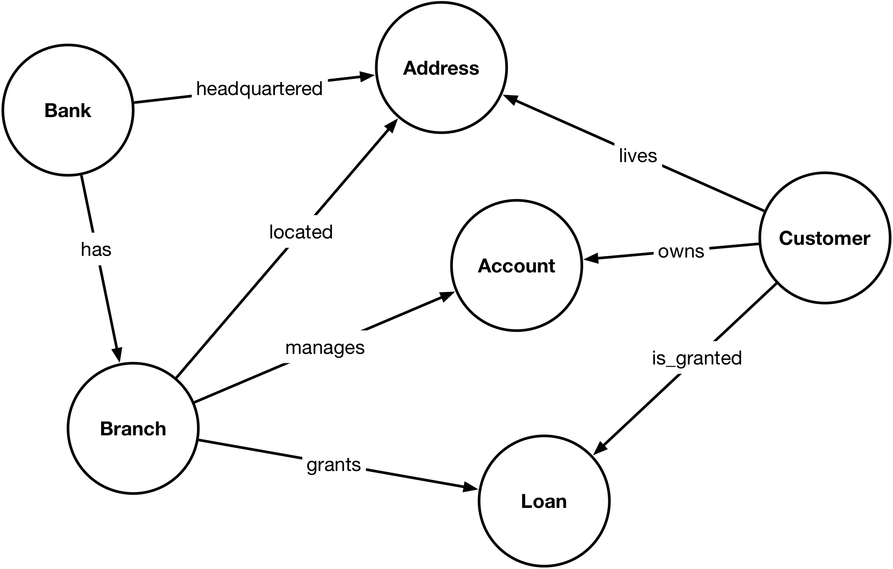

MATCH (a:Address)<-[:lives]-(u:User)-[:follows]->(v:User)
RETURN v.nickname, a.country, count(u) as nbFollowers
ORDER BY v.nickname ASC, nbFollowers DESC;
MATCH (u:User {nickname:"john_smith"})-[:publishes]->(p:Post)<-[:tagged_in]-(u:User)
WITH DISTINCT u
RETURN u.first_name, u.last_name
MATCH (j:User {nickname:"john_smith"})-[:friend_of]->(u:User)<-[:friend_of]-(l:User {nickname:"lara_hughes"})
RETURN u.nickname, u.first_name, u.last_name
MATCH (f:User)-[:follows]->(u:User)
RETURN u.nickname, count(f) as nbFollowers
ORDER BY nbFollowers DESC
Modeling the database of the banking system
The following figure shows the ER diagram modeling the database of a banking system. Each bank is identified by a unique code and name, and has one or several branches.
A branch is responsible of opening accounts and granting loans to customers.
Each account is identified by a number (acct_nbr) and is either
a checking or savings account (property acct_type).
Each customer is identified by its social security number (ssn);
a customer can be granted several loans and open as many accounts as s/he wishes.
Each bank is identified by a unique code and name, and has one or several branches.
A branch is responsible of opening accounts and granting loans to customers.
Each account is identified by a number (acct_nbr) and is either
a checking or savings account (property acct_type).
Each customer is identified by its social security number (ssn);
a customer can be granted several loans and open as many accounts as s/he wishes.
Questions
- Model this database in Neo4j
[See solution].

- The nodes with label Customer have the following properties:
- ssn, first_name, last_name, telephone.
- The nodes with label Bank have the following properties:
- code_bank, name.
- The nodes with label Account have the following properties:
- acct_number, acct_type, balance.
- The nodes with label Loan have the following properties:
- loan_nbr, loan_type, amount.
- The nodes with label Address have the following properties:
- street_number, street_name, department, city and postal_code.
- The nodes with label Customer have the following properties:
- Write a Cypher query to get all the data (including the full address) on the customers that have a checking account
with a negative balance
[See solution].
MATCH (c:Customer)-[:owns]->(acc:Account {acct_type:"checking"}) WHERE acc.balance < 0 RETURN c - Write a Cypher query to get the SSN of all customers that have no loan at the 'Bank of America'
[See solution].
MATCH (c:Customer)-[:is_granted]->(l:Loan)<-[:grants]-(br:Branch)<-[:has]-(ba:Bank {name:"Bank of America"}) WITH collect(distinct c.ssn) as ba_customers MATCH (c:Customer) WHERE none (x in ba_customers where x=c.ssn) RETURN c.ssn - Write a Cypher query to get the name of the bank that has the most branches
[See solution].
MATCH (ba:Bank)-[:has]->(br:Branch) RETURN ba.name, count(br) as nbBranches ORDER BY nbBranches DESC LIMIT 1 - Write a Cypher query to get the SSN of all customers having an account in more than one bank
[See solution].
MATCH (c:Customer)-[:owns]->(acc:Account)<-[:manages]-(br:Branch)<-[:has]-(ba:Bank) WITH distinct c.ssn as ssn, ba.name as name WITH ssn, count(name) AS nbBanks WHERE nbBanks > 1 RETURN ssn
- The nodes with label User have the following properties:
- nickname, first_name, last_name.
- The nodes with label Post have the following properties:
- content, date, time, lat, long.
- The nodes with label Email have the following properties:
- address.
- The nodes with label Address have the following properties:
- city, country.
The relationships of type friend_of and follower have both a property date.